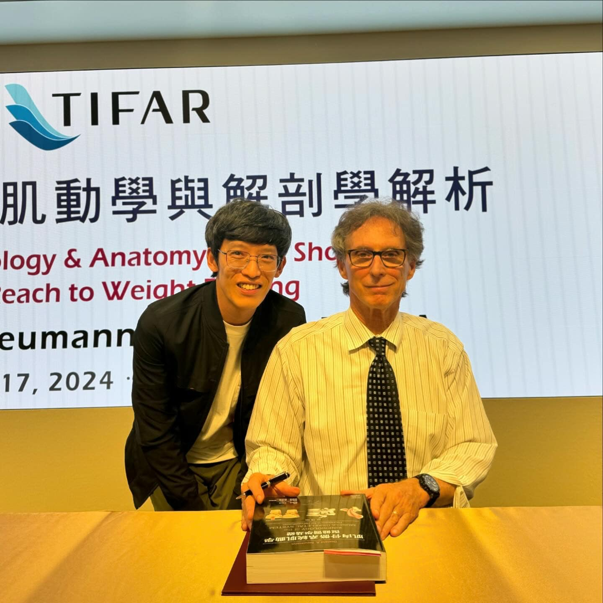
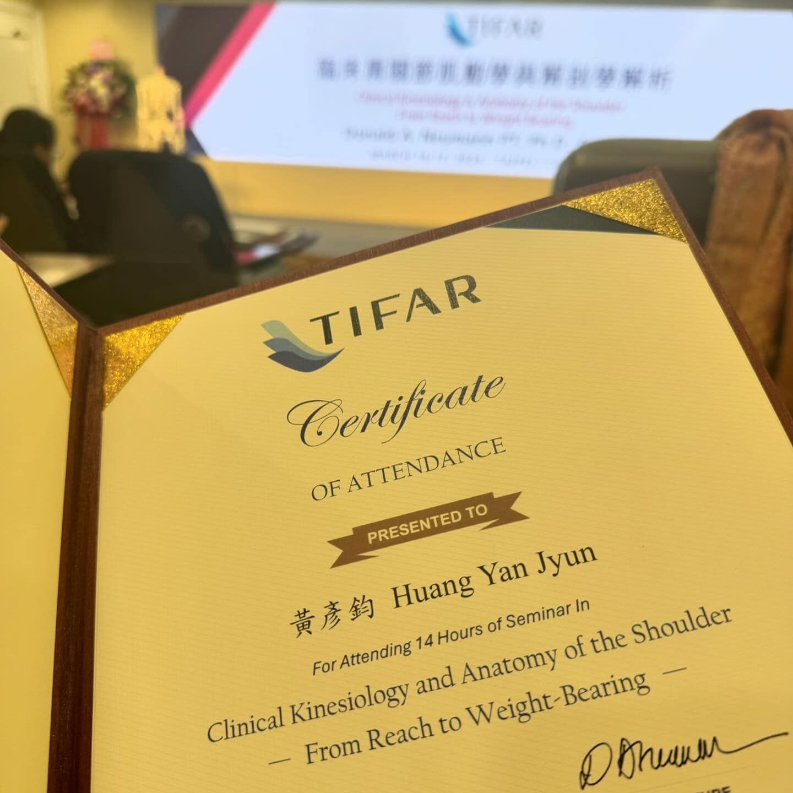

臨床肩關節肌動學與解剖解析，完成✅
臨床肩關節肌動學與解剖解析，完成✅
Neumann果然是物理治療的經典大師，不斷告訴底下的我們，不要死記硬背，而是要要掌握原則！ 型態千變萬化背也背不完，掌握原則才能更近一步推衍並且適洽所有臨床狀況。
「智者察同，愚者察異」掌握大原則大規律，才能以不變應萬變！
上課學習真的是開心😃 尤其能把很複雜的東西講的很清楚，真的是太讚啦👍
超多的內容濃縮到兩天，需要好好消化一下🤓
——
人超級多，為了等簽名拍照排了一個小時🤣🤣
然後用破到不行的英文回答老師簽名時的聊天，實在丟臉到不行😅😅😅

